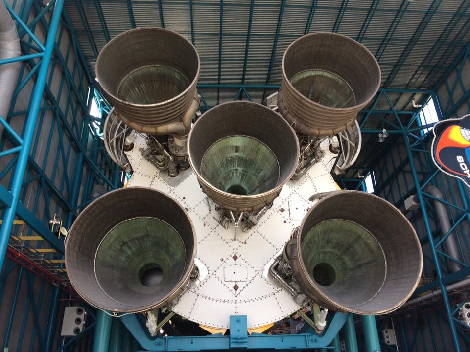

Our Florida Trip!
February 2017
By Tiffany
Kennedy Space Center
In February 2017 I took my daughter Grace and my stepson Grant to Florida where we met their uncle Lance for some fun in the Florida sun! We stayed in a timeshare located very near to Disney World. First on the agenda of fun was The Kennedy Space Center . We spent the whole day there and could've spent another whole day. What an amazing place! I've always had a love of space and NASA and I was happy to get to share this experience with Grace. The world of space travel is incredibly fascinating to me. There was a lady doing a demonstartion that we got to spend quite awhile talking with. She was a seamstress for NASA. I never knew there was such a position at NASA but after talking with her it made complete sense! The walk beneath a real Saturn V moon rocket is incredible! The Saturn V consists of three stages — all of which are visible in incredible detail. At 363 feet/111 meters long, it is 60 feet/18 meters taller than the Statue of Liberty! It is a remarkable example of human engineering and space travel! The Space Shuttle Atlantis is on full display also and it is a ship like no other! Displayed is a mighty full-scale space shuttle stack of two solid rocket boosters and orange external tank. Inside, Atlantis is displayed as only astronauts have seen her in space, rotated 43.21 degrees with payload doors open and Canadarm extended. It is an incredible sight to see up close! We could see the launch pad which was being prepped for a rocket launch in just few days from when we were there. If you've never been to Kennerdy Space Center I highly recommend planning a visit sometime; you will not be disappointed!


Disney World
Next up on our trip was Disney World - The Magic Kingdom! Lots of rides, lots of walking, lots of waiting! This was not as fun for me as the Kennedy Space Center but it was still fun. Seeing the famous castle and all of the Disney characters was very cool and a little surreal. I feel like parents need a lot of patience for the day at Disney World (and a lot of money!). Kids will have very little patience and you could certainly tell just by strolling around th theme park in the afternoon that kids were getting tired and cranky and parents, tired and cranky as well. The last ride we rode was Space Mountian and we probably should've skipped that ride. Grace does not like roller coasters nor flashing lights and that's what the ride consists of. All in all it was a magical day for Grace and that's what mattered and why we went to Disney World! It's a part of the trip she'll always remember and for that I'm grateful I was able to give her the experience!